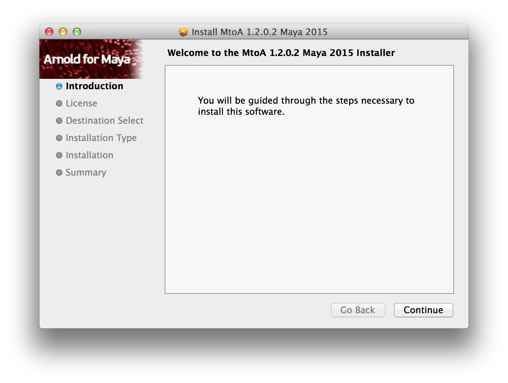
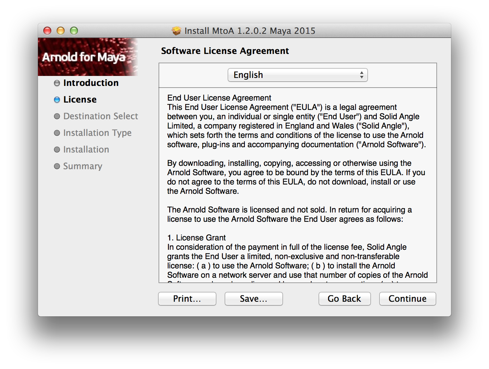
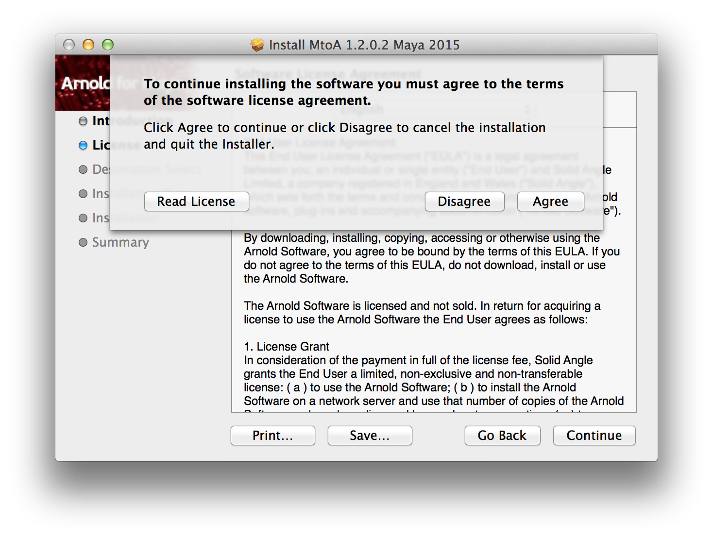
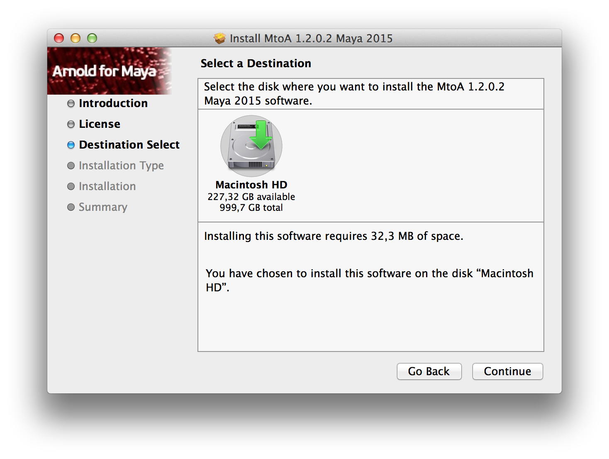
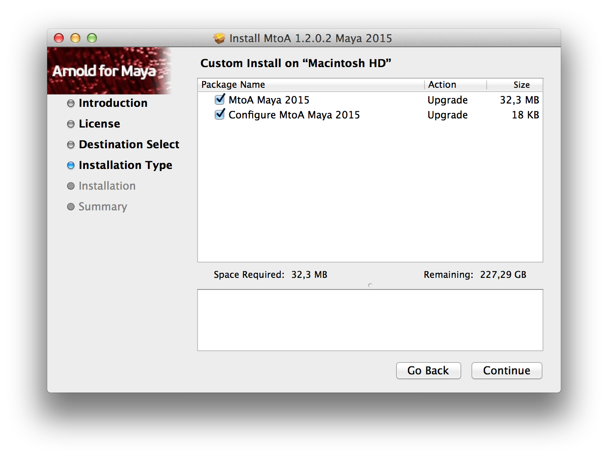
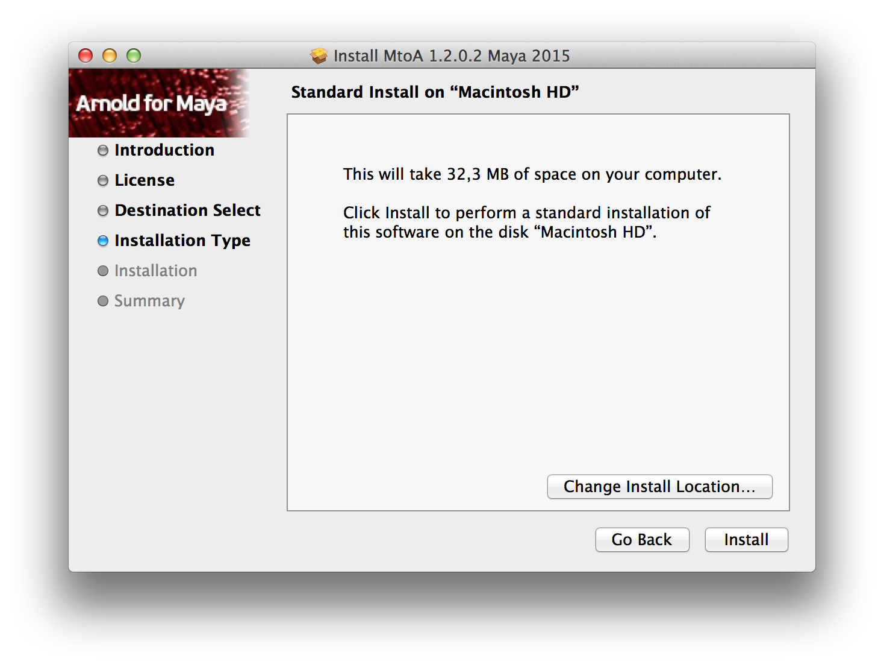
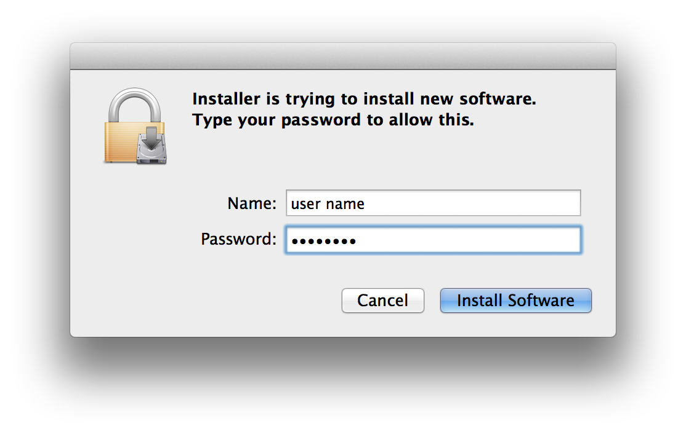
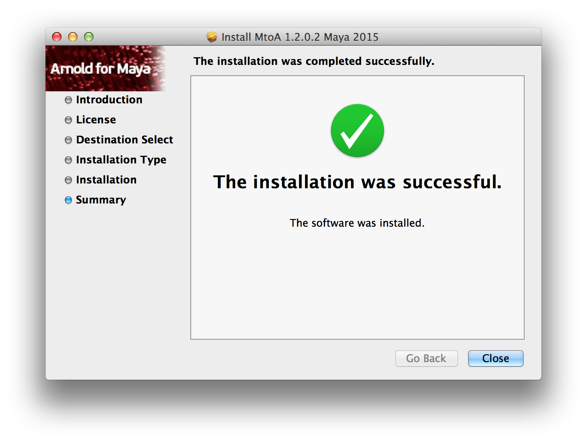
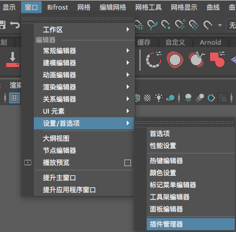
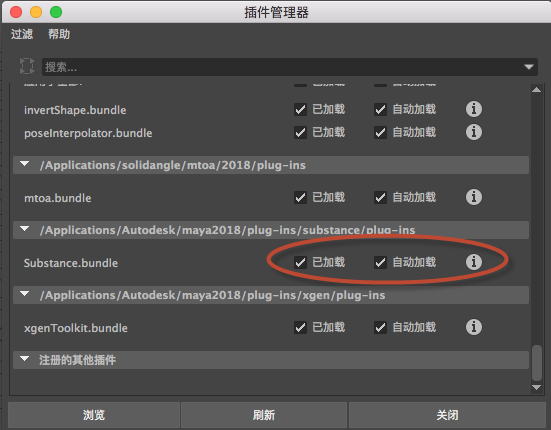

在 Mac OS X 上安装 Arnold for Maya
如果尚未安装，则需要下载 Arnold for Maya (MtoA)。
- 下载文件后，运行 pkg（在 Finder 中，双击 pkg 文件，然后在 Dock 中，单击“下载”(Downloads)，接着单击 pkg 文件）。

- 依次单击“继续”(Continue)、“同意”(Agree)接受许可协议。


- 选择 MtoA 的安装磁盘。

- 选择是否要仅安装 MtoA 文件，或是否要将 Maya 配置为使用 MtoA。

- 当安装程序准备就绪后，系统会提示您输入管理员密码。


- 现在，您应该看到一条消息，提示您 Arnold 已成功安装。

- 要在 Maya 中加载 MtoA，请单击“窗口 >设置/首选项 > 插件管理”(Window > Settings/Preferences > Plug-in Manage)，然后加载 mtoa.bundle


卸载
我们并没有为 MtoA 提供自动卸载程序，但是，使用 Maya 2013 或更高版本时，您可以放心地移除 MtoA 安装文件夹。如果您使用的是 Maya 2012，则还需要编辑 maya.env 文件以移除对 MtoA 的引用。